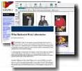

PIE Home
Events
Ideas
Crickets
Places
Links
Philosophy
 |
Links We Like People working with the PIE Network recommend these resources for information about playful invention and resources for creating (and thinking about) your own projects. |
Articles and Projects| Organizations | Supplies
and Projects
- "Robotic
Design Studio represents an alternative vision of how robot
design can be used to teach engineering in a way that is more inclusive
and provides more room for artistic expression than contest-centered
formats."
-Robbie Berg, Wellesley College
- When
Backyards Were Laboratories
from NY Times, May 19, 2002.
"This article expresses concern about the fact that kids today have fewer opportunities to 'tinker'."
- Mitchel Resnick, MIT Media Lab
[Requires free NYTimes.com registration to view]
- Robots
Find a Muse Other Than Mayhem
from NY Times, May 30, 2002
"Those of you interested in robotics might find this article interesting..."
-Beryl Rosenthal, MIT Museum
[Requires free NYTimes.com registration to view]
- "Cabaret
Mechanical Theatre:
Incredible collection of wooden automata! You can purchase wooden
automata kits, paper cut-outs, and books here."
- Mike Eisenberg and Ann Eisenberg, Craft Technologies Group, University of Colorado, Boulder
- "I loved
the exhibition Devices
of Wonder at the Getty in Los Angeles. I visited at least
four times. The show is down, but there's a website that features
some of the neat objects from the exhibition."
- Margaret Pezalla-Granlund
- "I use this
NASA photos
website to find images that inspire my artwork. I especially like
the "Other" category for photos of asteroids and comets."
- Margaret Pezalla-Granlund
- "American
Science and Surplus is a good source for odd materials.
The web site is good for browsing. Consider ordering a catalogue-
they are fun to read."
-Margaret Pezalla-Granlund